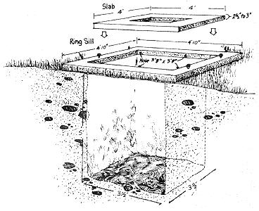

The outbuilding should be framed in with 2 X 4's (See framing illustrations in the Image Gallery) and a vent built for the pit. This vent may extend above the roof line as shown on this page, or merely run out the back of the house.